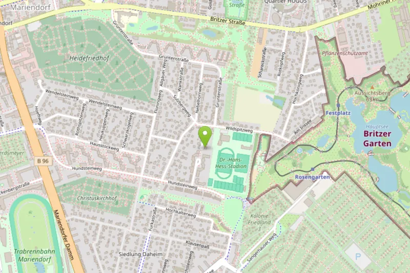

Kontakt und Anfahrt
Kontakt
Sie finden uns in Berlin im Stadtteil Mariendorf.
So erreichen Sie uns
Brenck & Klimek GmbH
Weißkugelweg 1112107 Berlin-Mariendorf
- Telefon 030 704 09 80
- Fax 030 70 17 99 51
- E-Mail info@brenck-klimek.de
Wenn Sie uns besuchen möchten, bitten wir um eine kurzfristige Terminabsprache.
Wegbeschreibung
Von der Stadtautobahn A100 Richtung Süden:
- Abfahrt Gradestraße nehmen.
- Von der Autobahnausfahrt rechts auf die Gradestraße abbiegen.
- An der nächsten Ampel (nach ca. 500 m) links in die Rixdorfer Straße abbiegen und ihr bis zum Ende folgen (ca. 1,5 km).
- An der Ampel links in die Britzer Straße abbiegen und sofort wieder rechts (nach ca. 50 m) in die Grüntenstraße.
- Der Grüntenstraße bis zum Ende folgen (ca. 1,2 km).
- Rechts in den Wildspitzweg und sofort wieder links in den Weißkugelweg abbiegen.
- Sie finden uns im letzten Haus (Nr. 11) auf der linken Seite.
